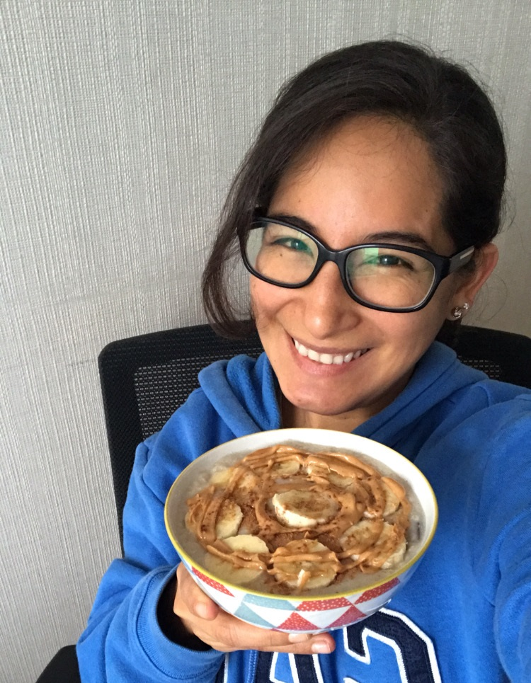

Healthy Creamy Oatmeal

Oats are going to be your ally in your path to a healthier eating style.
Thats is why, this dish should be at least one of your meals of the week.
Here you will learn how to prepare a delicious, creamy and healthier version of traditional oatmeal.
No more talking and let's cook!
Ingredients:
- 1 cup water
- 1/2 cup old-fashioned oats
- 1/4 cup unsweetened almond mil or more water
- 1 measure powdered stevia
- 3 cloves, 1 cinnamon stick
- fruits and topping you love
Directions:
- Put in a small saucepan the water, cloves and the cinnamon stick and bring them to boil.
- Remove the cloves and cinnamon stick, then add the oats, stir for around 3 minutes and wait to boil again.
- Then, turn the heat down to low, add the almond milk or more water and continually stir for about 5 minutes.
- Once oatmeal is at the desire cosistency, remove from heat and voilà your oatmeal is ready to serve.
- Serve this creamy oatmeal with your favorites toppings. For example mine are bananas, peanut butter and
ground cinnamon as you can see in the photo above, it's just freaking DELICIOUS!
This recipe is a keeper, so make sure to do it and surprise your family with this healthy breaksfast full of vitamins,
fiber and protein. Remember to share it on IG and tag me (my user is @luzmasmeals)
See you soon!